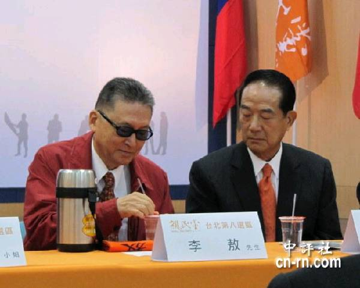

我在《候选人之死》一文中，曾提到在李登辉初任代总统，然后开始推行所谓“民主化”时，我就已经觉得不对头。后来有读者评论说我看穿他的把戏很早，我想想的确也是。当时台湾社会对他全面讚扬，国际媒体更是把他捧上天了，那么为什么我会独排眾议呢？那时我还年轻，还没有看穿美国的宣传和偽善，完全相信美式的民主制度是“歷史的终结”、人类政治体制的巅峰之作，所以我如果对民主化有意见，也只是台湾人的素质可能还不够格搞民主（其实我还在清华的时候，就曾这样公开讲过，想来听到那话的同学们必然吃了一惊），对民主制度本身我和同辈其他人一样地崇拜。
所以我对李登辉起疑，是从细节上开始的。论语上说：“听其言而观其行”，这也是我一辈子待人的原则。如果李登辉真的像他自称的是为国为民推展政治改革，准备转为西方式的自由选举，那么他就应该从一党独大的国民党内部开始，可是实际上他把党权抓得牢牢的，为党主席巩固权力的宣传动员只有变本加厉。而且台湾当时并没有政治或经济的危机，一个这么重大的转变，没有急着採行的理由，反而是各式各样的配套组织和制度至少要8-10年才能逐步实现，需要很小心和繁琐的计划；但是李登辉急急忙忙地，甚至可以说是粗暴地把总统改为直选，而该有的配套措施不但没做，他还反其道而行，大力起用黑金，让台湾的选举成为土豪劣绅掌权贪腐的正式管道。因此他的行动和言辞完全不符，而那些行动唯一一个一以贯之的效果，就是他的每一个步骤，都帮助他从旧国民党的外省籍干部手中夺取了实权，然后把这些实权部分下放给本省籍的土豪劣绅；那么最逻辑的解释，就只能是李登辉是个秘密台独。
在蒋经国过世后那几年，李登辉逐步把旧国民党的高级干部一个一个地解除权力。这些干部又分为四类：第一类没有实权，在第一波斗争中很快就失势了，这包括了国民党原本最有声望的本省籍干部，林洋港。第二类也没有实权，但是对李登辉有幻想，或至少没有戒心，而李登辉也觉得他们有利用价值，所以他们就继续当了几年像监察院长或外交部长这样的閒官，例如我提过的钱復。第三类有实权，而且坚决反对台独，所以是李登辉必须最小心处理的障碍；他的办法说来说去就是收买，但是他的收买是很高段、间接的，也就是让这些人当一两年的行政院长。这是国民政府里除了台湾省长之外油水最肥的缺，每年至少有5-10亿新台币的进帐（我在美国的两家瑞士银行当了多年的经理，即使有台湾来的大笔存款是存到纽约以外的分行或者其他不太知名的瑞士Private Bank，我也有可能从朋友、同事那里听到风声，不是吗？），而且李登辉完全不须经手，这些人绝对自动自发。所以原本掌握党权的李焕和掌握军权的郝柏村，就乖乖地为了那笔丰厚的退休金而就范。第四类则是除了拿钱之外，还幻想着做李登辉的继任人，所以为虎作伥最为积极，那当然就是宋楚瑜了。好笑的是这些人和他们的家族后来以反对台独为号召，至今仍让那些深蓝的民眾在被出卖了好几次后还抢着帮他们算钱；不过我既然看穿了他们的把戏，自然也就极度鄙视他们。
另外一个听其言而观其行的例子，是当前的国军。你若问国军的将领他们的使命是什么，答案必然是指天划地地宣誓要保卫国家；有戏剧天赋的，像我在前文《造舰捞銭，将军作秀》提过的邱国正，还会哭哭啼啼地说要成仁。但是国军在行动上做了些什么呢？我在一系列的文章已经论述过，他们购买军备专挑贵的买，完全不顾那些武器是否有用；连性能一样的两种雷达，他们也选了贵十倍的。这是准备保卫国家的最好手段吗？更加好笑的是，共军的作战计划其实很明显，要是国军将领真的笨到自己想不出来的地步，那么我在前文《2020年前的台海战役》里讨论的共军退役将领王洪光的文章也写得清清楚楚，也就是会使用各式导弹和火箭弹把国军的“机场、防空阵地、军港、通信枢纽、指挥所等高价值目标”先打成火海。别的目标或许不容易机动，防空飞弹的标准操作模式却是打了就跑的。我在前文《从1999年南斯拉夫战争到巨浪二型弹道飞弹》提到的南斯拉夫防空飞弹营营长Zoltan Dani，成功地用SA-3击落了隐身的F-117，而在1982年的贝卡山谷之役，以色列空军却能用没有隐身的军机彻底击毁19个比SA-3更先进的叙利亚SA-6防空飞弹阵地，其差别就在于Dani的雷达一次只开机几秒钟，若是没有锁定目标就马上拆机走路，而叙利亚的防空部队却是就地生根，不动如山。台湾比贝卡山谷还要开放，共军的侦察也比以色列还要详实，如果国军的防空飞弹不是每天机动，在战争爆发后第一天的存活率必然和叙利亚的经验一样是零。可是国军的防空飞弹部队有随时机动的习惯吗？如果没有，那么这些极为昂贵的爱国者飞弹，除了阅兵和开放民眾参观之外，还有什么用处呢？
不过国军和李登辉有一点很大的不同：李登辉完全是实践自己意识的阴谋家，国军却是饱受民粹打击的弱势群体。即使国军有心执行他们的使命，有可能成功吗？士兵们有那个纪律来年復一年、日復一日地把飞弹阵地拆了又装、装了又拆吗？如果士兵偷懒，军官能惩罚他们吗？实际上台湾社会根本不懂专业要求，出了意外却无限上纲，因噎废食。军官们自然不求有功、但求无过。民主民主，愚民做主；那公仆们哪有士气可言？大家当然只会装模作样、争功诿过，反正台湾选民是非不分，奖惩无度，那么现在台湾政府几近瘫痪的乱象自然只会越来越糟，国军不务正业也只是末世的一个小缩影而已。
【后注】我这个周末为家人熬夜忙碌，所以精神不是很好，这篇稿写得不是很清楚，在此澄清几个论点。
1. 为贪腐政客、犯罪头目和一般财阀收赃和逃税的银行业务，叫做Private Banking，最大的Private Bank刚好就是我工作过的那两个瑞士的银行。不过真正内行的顾客，用的是瑞士和加勒比海的小银行，这是因为大银行有很多其他的业务，例如Commercial Banking和Investment Banking，因此而必须在美国和欧盟注册。一旦注了册，被抓到逃税，后果就非常严重了。过去几年瑞联银和瑞士信贷都被美国罚了几十亿美元，并且被迫把顾客名录交给美国财政部。小银行就没这个风险，大不了关了美国分店、拍拍屁股走路。
2. 我不能把台湾贪腐政客的资料讲得很详细，不是因为怕被告毁谤，而是我们做跨国银行业务的人，在入职和离职的时候都必须签保密保证书，尤其是Private Banking那边对雇员盯得特别紧。我在Private Banks的消息来源当初给我消息，是信任我。我现在提到这事，还是不应该给他们惹麻烦。
3. 我说每年5-10亿新台币，是因为20年前我看得到的账户每年大约进5亿（现在想必更多，所以台湾政坛的杀伐和斗争就更加惨烈），但是客户应该会狡兔三窟，在别处另有账户，所以就估计5-10亿。我猜测这些钱应该主要是工程发标的过程中拿到的，所以省长才会拿得比院长还多。陈水扁是暴发户，原本在市长任内没怎么捞油水，当了总统以后忽然开始拼命搜刮，吃相比老国民党人难看多了，选银行的时候也往大的选，我们在业内的人都笑他外行。
4. 孙运璇院长我自己没有见过，不过他一生的挚友是国大代表裴鸣宇，而裴夫人本姓王，正是我的堂姑。我刚来哈佛念书时，还特别到纽约去看望她。她那时精神还很好，后来她随女儿搬到西雅图，几年后才过世。我可以在此澄清一件歷史：在孙院长中风之前，他絶对是蒋经国钦定的接班人；而且孙院长没有后继者那样的秘密银行账户，一生坦荡，是台湾史上最伟大的公仆。至于为什么如读者迴响所说的，李敖会想要写书撒谎，请看我在下文的分析。
李敖与宋楚瑜素来交好。
5. 李登辉原本全无过人之处，只是运气极佳。孙院长中风之后，林洋港隐隐有储君之势，引起了蒋经国的猜忌，被打入冷宫，必须由另一个本省籍人士来占副职缺。李登辉不求有功但求无过的履歷，让他成为暂时的过渡人选，没想到蒋经国死得太突然，没有来得及指定继承人。国民党的大老们，你不服我，我不服你。这时宋楚瑜还以为李登辉是盏省油的灯，就与他结盟，利用李登辉名份上的法定正统优势，压倒诸侯。我想宋楚瑜原本是计划要让李登辉当几年傀儡再正式取而代之，没想到先做了几年省长攒了些钱给小孩在加州挥霍之后，李登辉羽翼已丰，他就被莫名其妙地斗倒了。
6. 本来我一直觉得李登辉对国家不忠、对祖宗不孝、对台湾百姓不仁（拔擢黑金，鼓动民粹，是台湾今日乱象的罪魁祸首）、对国民党不义，很明显地是台湾史上的头号混蛋；但是最近发现他原来是日本人，那他的不仁不义其实是为了尽忠尽孝，而他满肚子的阴险狡诈也都是用在他眼中的正途上了，很难再说他是个大奸巨恶。那么谁才有资格继承这个台湾头号混蛋的头衔呢？我想提名宋楚瑜。李焕和郝柏村卖的还只是他们自己个人的节操，宋楚瑜却是为了自己的私欲，把国民党和中华民国给卖了。近代中国的卖国贼中，连汪精卫都没有成功卖断党国；宋楚瑜是唯一成功的党国终结者。这也就难怪他要想尽办法，遮掩自己的丑事；尤其是他居然还想着选公职。李敖与宋楚瑜素来交好，为他写两本故事书自然不是大事，不过我推想宋楚瑜应该还是给了润笔费的。
【后后注】有老同学写电子信函来提醒我注意安全，毕竟台湾政坛近30年与黑道有盘根错节的关系。不过我想在西方金融界工作过，而知道瑞士账户细节的并不是只有我一人。我手中也没有证据，全凭记忆而讲。台湾像这样对这些贪瀆事件传言多得很，不差我一个。如果我有点不同，那是我的公信力好；可是我的读者群很小，若是对我动手，反而更加强我的公信力。对其他可能爆料的人的吓阻力当然是一个可以考虑的因素，但是若是宋楚瑜2016年不选了，他就不必在乎；如果他要选，那么把一个晦涩无名的部落格搞成头条新闻，反而是愚不可及的。
总之，要进这个讲实话的行业，非得有一点勇气或傻气不可。我也不知道我有的是前者还是后者，反正一年前我决定要公开讲实话，现在还没有到结束的时候。
34 条留言
提到李登辉，我想到他说了很多次，钓鱼岛是日本的，我想请教从先生的视觉，怎么评价，钓鱼岛的历史纹路怎么梳理？
李登辉一辈子大概还没有讲过一句实话，我们不用管他。
钓鱼台是琉球和台湾之间的无人岛，有争议是很自然的。争议的解决在双方实力足够悬殊的时候自然会决定。
先生深得吾心。钓鱼岛的归属，无论中日两国在官方层面如何绞尽脑汁给自己找历史与法理依据，那也不过是为了在将来摊牌时师出有名而已。作为清醒的读者，我们只须知道，唯实力二字耳。北方四岛国际主流社会，包括中共都承认是属于日本的，但是日本却拿苏联/俄国没有半点办法。
顺便请教下先生，李登辉当年是如何得以上位？看了一些资料，好像都似是而非，有说李登辉利用了宋楚瑜斗败了其他竞争者，再一脚踢了宋。还有说孙运璇中风让李登辉捡了个大便宜。甚至还有说蒋经国晚年老糊涂加上病痛折磨而怠政，出昏招而选了李。不知哪个是对的？
这些说法并不互相冲突啊。蒋经国的健康的确是恶化得很快，所以我曾说过葡萄柚可能是一个助因。我不认为李登辉是蒋经国的继任人选，他只是暂时占位子的，结果蒋经国死得太突然，是李登辉/宋楚瑜有机可乘。
李的上台是蒋经国「吹台青」政策的受惠者，即是吹捧台湾青年政策。李绝对是蒋经国精心挑选出来的，两蒋找人接班，绝对不可能「所托非人」。所以李的路线，其实也就是两蒋路线的延续。
宋的地位还不够格跟李争接班地位，至于孙运璇就算不中风，应该也止于内阁而已。其他相关李争大位的事情，建议可以参考李敖写的《李登辉的真面具》、《李登辉的假面具》两书，可以看出李的全貌。
李敖是个职业文字杀手。事实与真理对他来说，只是暗杀的对象。
Augustine2015-04-27 00:00:00
相对的孙运璇时代有难得的好官，但是假设正统的中国人必定清廉，不清廉的都不是中国人，美国为了自身的利益决定要扶持谁在台湾执政，台湾的命运和其他第三世界国家一样，在台湾復兴中华文化也改变不了。
.
..
所以我倾向于把台积电这样的企业看成是在台湾的特例，讲难听一点AIT在基督教会都没有线民吗？都不会向CIA分享情报吗？现在的台湾上层精英圈子有点像奥地利维也纳，台湾人很向往那一套的。如果台积电完蛋了，美国对台军售也会跟着出问题，所以美国会考虑继续暗助头脑灵活的台湾人加入台积电这样的公司，让逻辑电路决定台湾的未来，台湾电力公司和中华电信也可以继续瓜分利益。
.
..
台湾的新生代曾经吸食毒品的比例高的吓人，李登辉是快死的人，毒品的生命却无比的旺盛。
台湾现在的社会已经暮气沉沉，真像是歷代末世的乱象。
这么说来，还是老国民党的官僚经验丰，知道如何存放转运，而不为人所知。包括李登辉在内可能都不知其法，否则也不会有夫人行李箱运钞的传闻，陈水扁更是等而下之，老婆连礼卷都要收，加上让儿子操作，难怪会有海角七亿事件，比较起来，蔡英文像个乳娃，十八%都一边骂一边拿。马英九更是不好说，观其行真让人为台湾担心，他对美国言听必从，包括支持香港占中，是不是有把柄在美国手上？以台湾目前的情况，需要大破大立，所以蔡英文上台也有好处，让台湾破得快一点，才有机会活火重生。
我想老国民党倒不一定是经验丰富，而是他们在蒋经国清廉治理过久了，一切小心为上，忽然有了收入，也必须低调谨慎。陈水扁当了总统之后，根本无所顾忌。
我从未提马英九，因为我从未听到马英九藏钱的事。
你若以为蔡英文或任何其他政客选举是要为民服务，那么就真是Hope Triumphs over Experience。
李登辉的真面具是1993年出版，李登辉的假面具是2000年，李敖宋楚瑜近十余年交好没错，但从时间上看来这两本书不太可能是李为了宋而写的。
我只知道他写得有不对的地方，背后的黑幕我不知道。或许宋原本只当李敖的深喉咙，或许一开始只是巧合，宋后来才了解李敖可用。
我不是说马英九有金钱方面的问题，而是说他的一些行为，太奇怪了；比如香港占中事件，基本上是中国内政问题，加上背后支持者和美英两国千丝万缕的关系，均已出现在媒体了，这时候表态支持，不是傻子就是背后有不为人知的一面。再说 TPP，又先放出风声说应该加入，连美国参议员Sen. Elizabeth Warren ，都说是套利给美国大银行、大商家，对签约国不公不义，台湾还是想加入，这件事末来处理的方式，就可看出马英九的行为。
1988 年叛逃的中山科学院核研所副所长的张宪义，就是在美国进修时为中情局吸收。相信一定有很多其它的活间尚未报光，尤其是拿政府奖学金赴美就读的党国未来精英，更是吸收对象。
这不是没有可能，但是我觉得证据还是不够的。马英九很可能只是幼稚而完全相信美国的优越性，台湾这样的人很多啊。
英国的前首相Tony Blair亲美更过头，连伊拉克都跟着小布希去打，后来英国人也猜测他是CIA的间谍，2010年还拍了一部电影《The Ghost Writer》，你有空可以看看。Blair退休后就搬到美国，靠到大公司给演讲赚钱（一场约十万美金），英国人也拿他没办法。
先生提到布莱尔当年涉嫌美国间谍的传闻。让我想到，马英九在美国留学多年，毕业后还曾在美国短暂工作过，中途被美国间谍机关策反也有这种可能。CIA很喜欢策反外国留学生为将来布局。有时看马英九的行为确实有点可疑，他上台后的很多政策，既不是为了台湾利益，也不是为了中华民族与两岸的整体利益，倒像是为了美国利益考量。比如“不统不独不武”，简直像赤裸裸地为美国的台海政策背书。有人说三不既安抚了绿，又安抚了蓝，还安抚了中共，但话说得这么直白，更有点像急于对美国表明心迹：“请别因为我的身份怀疑我，我是不会推动统一的”，毕竟美国的最佳利益就是用不统不独不武的台湾来随时敲打中共。
还有在香港占中问题上的态度，很多国家都碍于和中共的关系，对此避之唯恐不及，包括前宗主国英国，政府都很低调，只有几个国会议员在那里闹腾。马政府是台湾历届政府里和中共关系最融洽的了，马英九居然一跳三丈高，完全不顾两岸关系热络的大好局面。冷不防地突然公开打老共的脸，估计中共领导人都被打得错愕万分吧。给人感觉有点像踩着鼓点配合cia在港的渗透活动（当时香港媒体中，有马英九派台湾军情局特工参与占中的传闻也是甚嚣尘上，包括教游行人群如何对抗警察之类，也不知真假）。
还有服贸货贸卡关这件事，大陆网上那时还有阴谋论说马英九并非真的白痴，他事先早就料相关各方的反应，只是在装蒜罢了，故意让事情发展到不可收拾，演一出苦肉计，绿营和闹事的学生自以为得计，殊不知被他利用了，最后服贸成功泡汤，大陆和台湾双输，只对美国有利。中共失去了一个走向文统的机会，台湾输了发展前景未来经济注定被边缘化，美国让两岸维持若即若离，大获全胜。（这种说法我是不太信的，有些过于科幻。马英九如果真的布局如此之巧妙，拿捏如此之精准，演戏如此之逼真，那这个人也太可怕、太深不可测了，呵呵）
不过，总而言之，上面这些所有猜测也都太诛心之论了，作为尊重事实与逻辑的我们，也仅能作一闲聊谈资。在没有过硬的证据能证明前，就像先生您说的，只能说明马英九是个盲目崇拜美国价值观的幼稚病患者和窝囊废而已
你已经把整个分析都说完了，我还真无可置喙。
以科学的态度来说，Occam's Razor要求我们接受最简单的解释，而这里最简单的解释就是马英九是个蠢蛋。除非有特别的证据，否则那些揣测就只是揣测而已。
记得几年前看过一段立委质疑防长的视频，大陆发射嫦娥试验器从台湾上空飞过。这位立委大人“有没有侵犯我领空？”，防长更正他“是从太空飞过”，“你就说有没有飞过”，无奈的苦笑着回答”有“。”那有没有抗议？以后咱们发射航太卫星也必须从大陆飞过”看着防长被训得跟三孙子似的，又好笑又觉得悲哀！这种环境下有多少精英还愿意从政，为政府服务？再看这次国民党没有拿的出手的候选人愿意出战，民进党还是8年前的小英，都是后续无人啊！反观大陆嫦娥探月和981等重大国家项目的核心团队平均年龄都是三十多岁。
先生有没有看纽约时报的“万达帝国王健林：游刃于商业与权贵之间”。
台湾政坛的智商之低，在民主国家都是惊人的。
没有，有什么特点吗？
昨天新刊登的，习近平、胡锦涛、温家宝、贾庆林、王兆国的家族都有提及。
纽约时报和Bloomberg这两家美国媒体最喜欢写这些捕风捉影的东西，实际上它们的证据是很贫弱的，亦即没有金钱交手的真正记录，顶多只在谁有什么股票这种事上才有分量，可是连这类的消息往往也是作假的，反正有谁能复查？
它们都是美国宣传战的先锋，有动机也有习惯撒欢。我没有动机也没有习惯。
chenwj2015-05-07 00:00:00
我一听这些胡扯就反胃。台湾的电视评论就这水准，那老百姓当然是蠢得不行。
chenwj2015-05-07 00:00:00
真是抱歉，污了先生的视听。我不会再贴这样的连结上来了。:-)
没关系，我既然要评论台湾时事，就必须了解台湾现状，再噁心也没有办法。
曾经在电视台专访李敖时，李敖自称，他刚党选立委时，王院长送他二百万元红包，他回赠画一幅。令他与宋并没有很深渊源，倒是前几年宋要见他时，也是派人现致赠两百万元红包，李敖婉拒了。有意思吧!这些高官都是现金送礼的。特补充。这些都有电视专访为记录的。
好吧，我对李敖没有深刻了解，或许是误会了他；只是他所说的孙运璇院长不是内定的接班人，这绝对是错的。
ew975920002015-08-03 00:00:00
〝谁才有资格继承这个台湾头号混蛋的头衔呢？我想提名宋楚瑜。〞
看来.....湖南人真的是国民党的克星，毛泽东就不用说了，国民党毫无招架之力，李扁体制将两蒋累积的国本败去大半，二次政党轮替后却换上了湖南人马英九，七年多下来国民党伏地喘息，接下来又是个湖南人，这次宋楚瑜或将是最后一根稻草
谈论巧合没有逻辑上的意义。
你是猴子派来的xx吗2015-09-16 00:00:00
英国的前首相Tony Blair亲美更过头，连伊拉克都跟着小布希去打，后来英国人也猜测他是CIA的间谍，2010年还拍了一部电影《The Ghost Writer》，\\
百科上说\\拍完这片子波兰斯基就被美国抓了，官方罪名是多年前的猥亵女童，当事人都长成大妈了，人家都原谅他了。此地无银三百两。这么一弄倒让我怀疑片子里情节的真实性了\\
今天看到这个新闻
“台公务员张玮珊支持统一被围攻 民进党市议员：应斩立决”
www.guancha.cn/local/2015_09_16_334467.shtml“2015年9月2日，凤凰历史频道推出纪录片《走近台湾统派青年》，随后，又推出了片中受访嘉宾张玮珊的访谈全文《我如何从感性“台独”变为理性统派》。但因为在文中称自己认同中国文化、支持两岸统一，张玮珊遭受了绿营媒体的狂轰滥炸，网民的谩骂攻击，被《苹果日报》、《自由时报》、三立新闻台等台湾媒体抨击为“媚中”、“媚共”，并有民进党台北市“议员”王世坚受访时公开称应该将她“斩立决”。”
前有范兰钦，博主的博客点击逼近100万了，肯定有人才策划把你塑造成“王冠英”，只怕你名气越来越大，以后出台湾机场就像郭冠英一样，都会有大批绿卫兵用拖鞋菜刀招呼你。。。。。。
路边社消息不是说人家都组织去灯塔国追杀范兰钦了么。。。。。。
狡兔都要三窟，聪明如你，早泄做好预案为妙！！
注意安全啊老王，千千万万嗷嗷待哺的网民无时无刻不在期待你的文章。
我的印象是绿营人士没有耐心听超过一句话长度的逻辑讨论，所以也就不会看到我的结论。
jeffchang2015-10-05 00:00:00
几十年过去了，国民党还是在大陆时期那幅“内斗内行、外斗外行”可笑复可悲的德性，真是让人不忍卒读。唯一敢直面症结所在的洪女士，也成了党内阴谋的牺牲品。这种烂党，亡了也罢，只是，国民党将来如果完蛋了，绿营恐怕越发肆无忌惮，无人制衡了，终究对台湾还是坏事。
世事难料，我们还是在等着看吧。早点走上极端，说不定早点带来永久的解脱。
chenwj2015-10-05 00:00:00
给网友 "wang"。我觉得谣言不可尽信，特别是在台湾成为谣言之岛之后更是如此。我说说我的个人体会。去年台湾九合一大选，从我老婆的家人得知，有媒体报导台中市治安吊车尾，这明显是在攻击当时的市长，胡志强。我震惊的是，亲戚不来问身为台中人的我，反而尽信媒体报导，因此对胡志强骂声连连。最近看到一家素有声望的台湾杂志针对全台县市首长坐满意度调查，爆发登革热疫情的台南市长赖清德的民调高居全台第一，我真是觉得台湾媒体是烂到谷底，烂到黑洞里去。所以除非朱立伦和洪秀柱 "亲自" 宣布更换候选人，否则我认为台湾媒体不可信。
退一步说。换上朱立伦，我认为还会更惨，因为他比洪秀柱更没有自己的主见，更不能戳中蔡英文的痛处 (虽然大部分台湾人不在乎)。再退一步说，国民党已经退化成台湾国民党。要玩本土政治，铁定玩不过民进党。因为谁是本土，都长在民进党的嘴巴上。我对政党没有痴迷到死的愚忠。国民党不行，搞不定民进党，那就交给共產党来处理，只要这个政党或政府是为老百姓着想。可能有些大陆网友对国民党，或是民国抱有好感。但是就如同世上所有生命一样，政党亦有其生死。死抱着尸体不放，最终只能是被一起埋葬在歷史之中。
洪秀柱至少还能展现原则，给国民党的復兴留下一丝希望。现在大佬们再次将一己的私利凌驾于党国之上，做法又如此粗糙，国民党不只是必亡，而且连如何灭亡都已无关紧要了。
先生，洪秀柱可能被换下了。虽然对这个消息早有准备，但是仍不由感觉揪心，洪的立场我虽然不赞成，但是我对她这个人还是很佩服的，同时也尊重她想为台湾人民做事的宏远。国民党换上朱立伦之后，先生看是否这个政党的命运已经走到尽头。
反正一定会输，连有原则地输都做不到，国民党再一次显露其腐败的丑相。
当年若不是大佬们各怀鬼胎，怎么会让李登辉和宋楚瑜有机可乘？内党外援以争事势者，可亡也。
jeffchang2015-10-06 00:00:00
///我倒是怀疑他们根本没有意识到台湾还有贫苦民眾，因为长久以来整个大陆对台湾的印象都是发达而富裕的社会，怎么会有穷人呢？这些人接触的台湾人肯定也都是台面上有头有脸的人士///
这个应该不会，决策部门哪有可能那么蠢？他们不知要搜索和分析多少对岸的新闻资讯数据和舆情监测，台湾社会的真实情况恐怕他们心里跟明镜似的。真正的原因无非是决策者会不会因为个人利益而坐歪了椅子，或者有没有敢于承担责任的勇气而已。不过你说的他们常接触的都是一些穿梭两岸的政客商人，这也却是原因之一，两边一勾结就成交了，上骗中央，下瞒百姓。
官员还可以说是审慎保守；学者也没有提出新路线，那就是尸位素餐了。
我倒是怀疑他们根本没有意识到台湾还有贫苦民眾，因为长久以来整个大陆对台湾的印象都是发达而富裕的社会，怎么会有穷人呢？这些人接触的台湾人肯定也都是台面上有头有脸的人士，更加和这无缘，要让他们意识到贫苦民眾这个角度，恐怕需要特别的事件，或者特别的人的特别提醒才行
我想并不是不知道，只是没有深刻去思考可以怎么做。
台湾既然官不官、民不民，就让自称是中央政府的中共来为民服务吧。花不了多少钱，但是这些民眾才是政府的第一要务。
从长远一点看，一国两制和国台办，其实都是中共在处理港澳台问题上的一种尝试，至于说国台办软，或者说一国两制太一厢情愿，大家各有评价。一方面老一代共产党人（习近平的母亲也出身于国民党家庭，其父亲是山西某县长，抗日爆发后参加了共产党）与国民党千丝万缕的关系，让中共在处理港澳台问题上希望可以用更柔和的方式解决国家统一。另一方面就是当时国家实力不强，在类似问题也没有太多动用武力的底气。
但是绝不能因此忽视了中共在解决国家统一问题上的决心，正如同美国一直宣扬普世价值一样，这也是中共在大陆执政的一个立足点，轻易放弃等于自杀。何况到了今天两岸实力已经相差过大，就更不可能放纵台独。在骂国台办软弱的时候，我们也必须看到实际上共党在处理类似问题上的成熟和底气，用句老话说，一手胡萝卜，一手大棒，很明显国台办承担了很多胡萝卜的作用，至于形成既得利益集团，前不久王岐山已经派人进驻国台办，我相信很难会有太大的阻力。
caspase网友发的报道我也看到了，一些话确实很傻很天真，不过不能代表大陆的整体对台政策，倒是希望台湾的绿营不要看见甚至相信，毕竟战略忽悠局的美名连美国人都如雷贯耳。
国台办当然是必须说软话的，但是实质上的让利似乎只有长期的反效果。现在《中国制造2025》已经代表着大陆与台湾在关键產业上的直接竞争，台湾民眾对让利更加不领情，实在应该改弦易调，直接帮助台湾贫苦民眾了。
chenwj2015-10-06 00:00:00
我认为国台办是直接对台单位，他们的态度宜软不宜硬，软的对台湾民眾，硬的对明显台独份子。看到大陆网友常称国台办为跪台办，我觉得有点过，当然我也理解他们的心情，但是官方单位一昧的硬到底，很容易没有退路。但是我真觉得大陆涉台学者真有点图样图森破。这些学者发表的评论基本上不会被台湾媒体特意报导，应该不需要像国台办那样有所顾虑。
同意。
jeffchang2015-10-06 00:00:00
chenwj网友说的我同意。一个成熟的政府，其对外政策必须同时有鸽派和鹰派存在，刚柔并济。若一味示强就会变成北朝鲜这样的无厘头，最后往往弄得自己下不来台。国台办是主管对台交往的，若是太硬，恐怕对岸没人愿意和他们打交道，其工作成效要大打折扣。但是国台办最大的问题是腐败，某些官员和一些台湾政客商人勾结起来通吃两岸，结成利益共同体，充当掮客，欺上瞒下，利用两岸分治的局面给自己捞腰包。这也是习近平现在正整肃的对象。
对台无限让利，说起来这也是胡锦涛政治遗产的一部分，我感觉就是他当年四处花钱买平安政策的一个分支。新疆问题是这样，西藏问题是这样，台湾问题也是这样，总之，一有问题花钱就对了。花钱可以暂时延缓问题的爆发，却不能解决实质问题。这是一种很不负责任的施政方式，把所有问题爆发的时间点推给后任者。新疆和西藏还好说，完全在掌控范围内。但是台湾问题这么搞，你让利也可以，可是让利的大头却让政商集团赚去（这个到不能怪中共，是马政府分配环节出问题），反而给民进党乘机利用百姓对马政府的不满去煽动反中提供了绝佳题材，不得不说是大败笔。还有些人自我意淫说这是胡学习“郑伯克段于鄢”这一典故，简直驴唇不对马嘴，郑庄公故意放纵共叔段，是为了置其于不义，以便讨伐时师出有名。你给那些政商们胡乱让利这算什么？
我到觉得当前大陆推行卡式台胞证，简化台胞来陆程序，这才是走接触台湾基层人民路线的开端。拿着卡式台胞证，台湾人来往大陆，和从台北去台南没有任何区别，或许以后真的会出现先生所云的由中共出头接济台湾贫民政策的出现。
反正台湾政府不干正事。中央政府对民眾有什么福利和责任，直接去办就是了。
@chenwj 台湾问题现在不是主要矛盾，实际上习近平也说过，只要自身强大，很多问题都会迎刃而解，所以并不是大陆对此没有准备，而是重心已经转移到内部改革上。美国对台军售是老把戏，用台湾问题干扰中国，不过目前中国大陆对此已经放下，毕竟就算美国给台湾最先进的战机 ，也改变不了台海的局势。这是基本盘决定的，也是为什么台独是一个假命题，从历史上看，台湾的发展都是依靠大陆，这是从前到现在一直存在的客观事实，不会因为一些人为因素就改变，况且美国人也不会像大陆一样让利于台湾。
比较可悲的倒是台湾人，像网友所说会疯狂，正是一个地方要灭亡的征兆，这一点李光耀倒是看得更明白，现在越反抗，未来受的苦越多，民众也要为此付出代价。我倒是觉得经历一些苦难，可以很好的教育台湾民众，毕竟，台湾早年发展的相对太顺利，就如同香港一样，现在的一切倒更像一种历史的回归，只不过大家还没有适应过来。
最后，和本文无关，关于诺贝尔奖，经济和科技是相辅相成的，科技促进经济大发展，而好的经济也能提供更好的科技研究条件，中国在这方面厚积薄发，也很正常。不说诺贝尔奖里面掺杂了太多的政治意识因素，中国类似研究往往提倡的是集体的力量，给个人颁发的类似倒真是不多，国家科技进步奖好像就是如此。所以如果哪天诺贝尔也能与时俱进，设立一个团体奖项，我觉得还算不错。
台湾问题被推到后列是真的，但是Chen和我讨论的是愚民欲望过激，爆发出来逼迫台上的政客公然搞独立，这完全超出中共所能控制的范围。所幸可能性不大，不过若是发生，武统只好提前，欧美大概也不能真的制裁中国；当然他们的媒体编造出“不人道”的事件还是必然的。
chenwj2015-10-06 00:00:00
先生所说，正是我所担心的。其实我更担心的是大陆对此没有准备。总觉得大陆涉台学术研究单位抱有幻想，以为陈水扁执政时期未能独立就天下太平，可却不知现如今台湾基层民眾有如火山口底下的岩浆，这更为可怕。最近看到有消息称美国又欲对台军售，感觉是在火上浇油。我不担心台湾军方获得军售战力会有多少提升，反而担心民眾会以为有美国做靠山而更为疯狂。先生曾提到大陆可以拦截美国运抵台湾的军事装备，作为反制 (
http://blog.udn.com/YST2000/3894438)。不知道先生怎么看?
YST的网站我不去。他对台湾的诊断还不错，有时还有极深刻之处，但是处方往往异想天开，完全不切实际。感觉上他一辈子没有做大事、管团队的经验，纯粹只是纸上谈兵。
中美若是开战，必然两败俱伤，所以双方都会有很大的节制。美国的对台军售正如你所说的无关轻重，中共怎么会冒与美国决裂的危险去动手拦截呢？
//早点走上极端，说不定早点带来永久的解脱。//
走上极端，只是前台小丑们的把戏，后台老板各有算计，不会被小丑牵着鼻子走。所以呀，永久的解脱也不是说来就可以来的。
自从美国政界放出＂弃台论＂，我猜他们当中的部分人，也看到了中国以台牵美的用心－－所以，寧可在台湾还有价值的时候，和大陆多作交换（当然，他们现在还不是主流）。
操控民意固然好玩，但是有时养虎为患，最后被反噬一口。美国财阀鼓动右翼茶党做为瘫痪政府的工具，现在不也是得面临过度疯狂的民眾不肯支持“主流”候选人的问题？
蔡英文自然知道掌权后的首要任务是当美国人的龟孙子，但是像赖清德之流却是把台独的口号当真的。若是台湾仇中心态继续走向极端，届时蔡英文能否压制台独民意八年，还很难说。
caspase2015-10-06 00:00:00
我的感觉是大陆研究台湾关系的学者或者国台办有种既得利益集团的味道，如果统一了，就没有他们存在的必要了。跟计划生育部门差不多。所以这些机构里的人对台湾的观点常常不符合常识，这很讽刺。比如社科院的房宁
www.guancha.cn/FangNing/2015_10_06_336567.shtml。我不知道他们说这些话是来忽悠大陆人民还是真的对两岸关系自我感觉良好。
我感觉拦截售台武器不可行。根据基辛格的说法，三个联合公报和美国对台军售是中美私底下达成的默契，这种默契的基础是美国实力凌驾在中国之上也就是它的打破需要中美实力完全逆转。如果现在拦截，则表示中国单方面撕毁这种默契，等于中国准备摊牌了，我觉得现在中国实力还不够消化这种后果。另外即使美国再怎么对台售武，也无法改变大陆绝对的军事优势，大陆也就没有必要这个时候拦截，只需要口头反对下就行了。只要看看美国卖给台湾的武器，就可以看出他根本没想过真的帮台独，不过是稳定独派的军心来包住台独这张牌罢了。yst是站在台湾的立场思考这个问题的，觉得台湾这样被美国反复利用，为吃闷亏的台湾人民痛心，得出这样的结论不奇怪。
现实会发生什么，和自己希望要发生什么，是两回事，实在不该混为一谈。
chenwj2015-10-07 00:00:00
我想朱立伦应该是和早年的马英九一样，认为自己可以靠自己的魅力拉抬立委选情。朱立伦同马英九也是独台一派，强调一中各表。看到朱立伦否定洪秀柱的两岸政策，直接表明一中同表和终极统一不为国民党所接受。我不知道朱立伦知不知道自己到底在做什么? 亦或是他只为求眼前选举不要输得太惨? 他还请求人在日本的蔡英文，帮忙争取台湾加入 TPP。讲难听一点，就是像蛆一样请人施舍点饭吃。我的心拔凉拔凉的，觉得很想吐。
当然，我知道这样也好。朱立伦讲得这么直白，习进平主席应该也知道该怎么做了。只是我觉得人至少要有点格。借先生的留言板一疏己见，还请见谅。
他是高育仁的女婿，大概自认可以独力斗赢王金平系，想通吃整个国民党剩余的资源。洪秀柱出马后，引领出一个清高的新势力，是他始料未及的，必须赶紧打压。
短视近利、贪得无厌，是台湾人的通病，所以才会有勇于私斗而怯于公战的习性。其实他们只看得到伸手可及的利益，对其他人的必然反应完全无视，集体的危机更是置之脑后，比起偷吃乳酪的小老鼠还不如，是个十分可笑的闹剧。
换柱成真 朱立伦：其两岸政策背离台主流民意
www.guancha.cn/local/2015_10_07_336678.shtml良言难劝该死的鬼，今天这条新闻正式宣告台湾国民党成立，大陆民众（包括我）也算是死了心了。胡主席当年邀请连战访问中国，现在看来已经成了一场闹剧，唉，胡温政治经济都没有太大作为，彻底将团派打入了凡间。蔡英文还在访问日本，喊话要日本帮忙加入TPP，台湾的未来，看来结局已经注定。
上面的朋友包括王先生希望中共直接帮助底层民众，我认为中共从自身经历来说，内部对此应该是有争议的。毛泽东当年感谢日本人，因为日本的入侵唤醒了中国人的国家思维，让中国有了真正统一的条件，后来的文革也同样告诉民众不能被意识形态绑架，实事求是是检验真理的唯一标准。大陆的民众和中共都如少年不断长大，变强，成熟。这方面台湾应该意识到，求人永远不如求己。
从这一点上，我觉得台湾的未来确实如同那些名嘴所说，要由台湾人自己决定，结果无论好坏，都要自己承担。至于底层民众，我想中共宁肯当接盘侠，最后一起收拾残局，也不会再去搞区别对待，大陆的少数民族政策已经引起很大争议了，在没有回归前提下无条件救济台湾民众，这方面面临的社会压力会很大。现在发行台式卡，其实就已经说明了中共的底线，两岸很近，愿意来的我们欢迎，一视同仁，不愿意的就请自便。这也是对之前的让利过多的一种纠偏。香港问题也是如此，中共目前也有了底气，不会再在国家核心利益问题上退让，倒是港台，应该学习一下澳门，该怎么摆正姿态，融入中华圈。
有些过激，多见谅，我女友也是台湾人，她们还在台湾生活，全家都办了台式卡，我想台湾很多民众估计也是两手打算。只是对台湾觉得惋惜，看叙利亚的新闻，逃难的很多都是中产阶级，这些沉默的大多数关键时候不出现，最后还是要为国家的沉沦一起买单。
你大概不记得我们几个月前的讨论。所谓的救济台湾贫民，并不是拿钱到台湾发放，而是招收单亲家庭到大陆接受安顿，也就是把他们当难民看待（如果我没记错，这原本是南山卧虫的建议）。
这样的难民会越来越多，早点做好组织准备，长期下来在财政上反而是更便宜的。
我同意姚广孝有关网路在大陆助长民粹的说法, 也同意大陆多数老百姓的公民意识不强. 但我也同意陈晨所说中共政权对这一切还是有管制的方法和把握, 并且行之有成. 事实就是如果管制无效, 大陆现在岂不已跟台湾一样乱成一团? 甚或跟北非中东那些悲惨的国家一般?
另外前面有些网友所提出的担忧; 亦即2020民进党上台经营有成然后在老美的鼓动下公投修宪的这个假设; 以我对台对台湾人习性的了解, 我认为这不太可能; 除非届时台湾贫穷人口大幅增加到超过半数. 而事实上这也是不可能; 因为台湾的產业多少还是有点生命力, 另外大陆的让利在我个人看来就是一个既定的方针, 其目的也是希望避免这样局面的出现. 这点也可以从国台办的低姿态里看的出来. 那么在大部分的台湾人日子过得还不错的情况下, 一旦遭遇身家性命财產会毁于兵灾的某种选择时, 我敢肯定的讲, 他们一定会投反对票. 台湾人现在的呆痴是因为几十年来舒服日子过惯了的关系; 我前面所说的台湾上上下下的贪懒正是肇因于此. 然而一旦对岸战鼓敲响,我保证他们会马上清醒.
又, 全球化的现代, 事情会因为情况的随时变化而有不断的转折, 所以在一件事尘埃落定前有太多猜测其实并不好; 所谓的徒乱人意而已. 今日的一切不可能在以后就会一成不变. 日菲越南印度难道就会一直做美国人的马仔或应声虫吗? 我很怀疑. 中日僵局就会一直这样持续下去吗? (中国官媒最近不是还在替赴日旅游扫货的中国旅客澄清卖国的骂名?) 再来TPP就一定搞得成吗? 所以这些都是疑问, 结果如何最好还是耐着性子走着瞧! 美国人忙着围堵中国, 但北京也没閒着. 可以看得出习李上台后勤于外交, 而这跟以前比较起来就是一个很大的转变; 这是有底气的主动作为. 所以不论结果如何, 但中共高层大方针不错又实心干事, 有这样的政府, 大陆的网友不是应该比我们这些台湾人觉得幸运吗?
最后, 这一系列的讨论是起于换柱的风波, 所以我再回归到这个话题. 我这两天再想了一想, 还是觉得朱的乖张作为很可能还是如王先生所推测的; 亦即他有什么把柄落在王金平手上. 譬如他太太娘家牵涉到的弊案被王所掌握并压住, 或朱就是CIA的人. 反正能做出这么出格的事, 其人信用注定破產; 却竟然肯下这样的决心, 那一定是被逼上梁山; 背后肯定还有更见不得人的事. 所以我认为他现在其实已经出局, 只是一个为人操纵的棋子和傀儡而已. 这一路看下来, 我觉得王金平最厉害的地方就是再怎么样都不动声色, 然后在背后操控一切; 说实在的, 我很佩服他这一套; 实在是很细腻.
你说的不错，台独上台面的机会不大，但是我也不敢保证台湾愚民不会蠢到那个地步。
换柱的背后疑云重重，我们所说都只是猜测；不过朱立伦出面高调换柱，最大的受益人的确是王金平。
//如果我没记错，这原本是南山卧虫的建议//
正是小弟愚见, 本小利大, 有例可援(印尼归侨的华侨农场), 救济对象明确, 而且可以无视台湾任何执政党派的立场, 一推到底, 必有奇效.
希望能上达天听吧, 或者下次跟卢先生也谈谈这事 当然, 他不是台湾人, 可能就没王兄这么热心了.
其实香港贫富悬殊，底层民眾也需要帮助的。
具体的事项我没深究, 但卢先生在这项目上是有深入调研的, 还和几间大学联手做了不少数据, 规模一定是大的, 產业级.
按他所说, 技术上已没问题, 但政治上没动力. 香港还在吃老本, 没危机, 所以要等楼价崩溃后, 才有可能推行(要看到时候政治人物的见识和意向而定.).
务农是很累的；那些年轻人搞社会运动后可以到美国的NGO拿高薪。。。
卢先生在香港方面倒是有些准备的.
简言之, 就是等楼价大崩溃后, 恢復香港的第一產业, 但形式是农业的工业化, 学以色列, 向外出口农產品. 初步听来, 香港未开发的地是有的, 而且起码在水源上, 香港比以色列有优势.
我觉得很难与低成本生產地竞争，此外规模太小，无足轻重。
evergrand2016-04-06 00:00:00
有没有这种可能，老美国内避税逃税导致的财政损失太大了，然后panama papers根本目标是把这些避税天堂搞死，这些富豪权贵只是附带躺枪的牺牲品而已？
美国国内有好几个州也搞避税逃税的把戏。抓这些避税天堂，主要是肥水不落外人田，有好处由本土的律师享受。